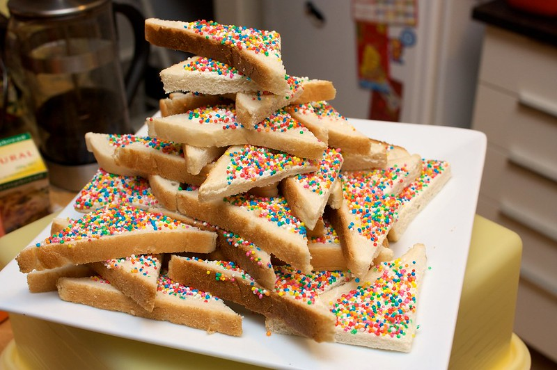

Fairy Bread

Description
A classic Aussie kids party favorite. We were all brought up on it.
Bread spread with margarine and topped with 100's and 1000's.
Ingredients
- 8 slices white bread
- ¼ cup butter or margarine, softened
- ¼ cup 100's and 1000's or other multicolored candy sprinkles
Steps
- Spread margarine onto slices of bread.
- Cover with sprinkles.
- Cut into triangles.
- Serve and enjoy!